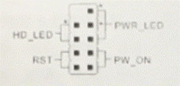
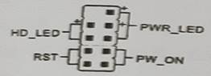
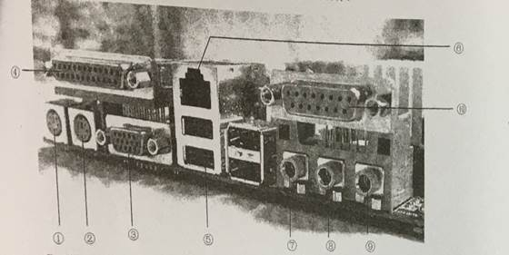
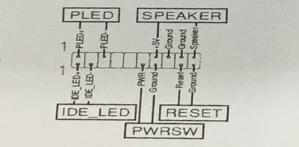
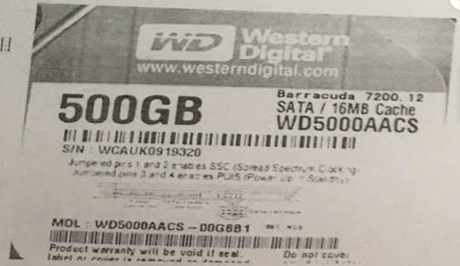
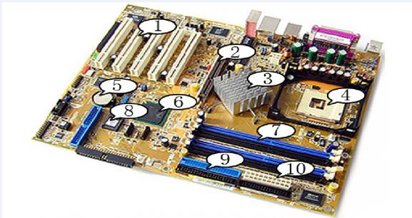
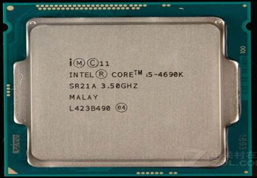
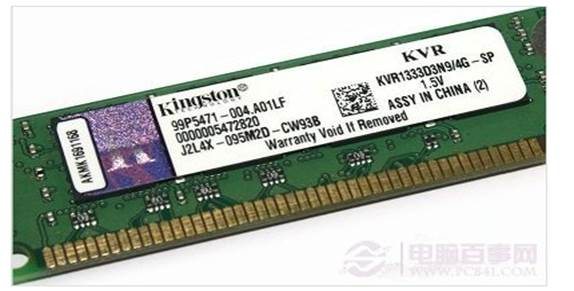

1 . 喷墨打印机用RGB模式来表示打印色彩，RGB的颜色是指（ a ）。
A.红、绿、蓝 B.红、黄、蓝 C.红、黄、绿 D.黄、绿、
2 . 硬盘Ultra ATA/133接口传输速率可以高达（ c ）。
A.60MB/s
B.100MB/s
C.133MB/s
D.150MB/s
3. 以下对微型计算机的分类中，不正确的类型是 （ d ）。
A.原装机 B.品牌机 C.组装机 D.苹果计算机
4. 下面选项中，属于显卡的显示核心检测工具软件是（ b ）。
A.CPU-Z B.GPU-Z C.HD Tune D.MenTest
5 . 已知主板的总线频率为200MHz，主板上倍频的跳线设置在4的位置上，则CPU的时钟频率应为（
c ）。
A.200MHz
B.400MHz C.800MHz D.无法判断
6. 在Windows系统中，对文件加密必须基于下列文件系统中的（ b ）。
A.FAT
B.NTFS C.FAT16 D.FAT32
7 . 小王想清除CMOS的密码，以下操作正确的是（ a ）。
A.对CMOS进行放电操作 B.拔掉计算机的电源
C.接通计算机的电源 D.重启计算机
8 . 计算机开机时，AWARD BIOS发出不断的长响报警声，故障是（ d ）。
A.电源、显示器异常 B.显卡异常
C.键盘异常
D.内存未插紧或损坏
9. 打印机的技术指标有一项用ppm表示，其含义是（ c ）。
A.每英寸打印的点数 B.每分钟打印的字数
C.每分钟打印的页数 D.每分钟打印的行数
10 . RJ-45网卡适用的传输介质是（ c ）。
A.粗缆 B.细缆 C.双绞线 D.光纤
11 . 光驱型号DVD-RW中的“W”表示（ c
）。
A.高级 B.速度快
C.可刻录 D.可重播
12. 可以有效消除磁盘上的文件碎片的是（ d ）。
A.磁盘清理程序 B.备份程序
C.系统还原程序 D.磁盘碎片整理程序
13 . 下列软件中，不是用于性能测试的为 （ d ）。
A.Everest B.鲁大师
C.3DMark
D.EasyRecovery
14．主板上SATA插座引脚根数是（ b ）。
A.3 B.7 C.8 D.39
15. 一般来说，在系统属性的“设备管理器”中某项设备前出现红色叉号，表示的含义是 （ b ）。
A.该设备不存在
B. 该设备目前被禁用
C.未安装该设备驱动程序或者驱动程序安装不正确 D. 该设备工作正常
16、主板的双通道技术是一种内存控制和管理技术，依赖于（ C ）的内存控制器发生作用
A．硬盘 B．CPU C．芯片组 D．以上均不正确
17、对以下设备传输速度升序排列正确的是（ D ）
A．IEEE1394、USB
、PS/2、COM
B．PS/2、COM、 IEEE1394、USB
C．COM、PS/2、IEEE1394、USB
D．COM、PS/2、USB、IEEE1394
18、不支持INTEL芯片组的大厂商是（ B ）
A、VIA B、ATI C、nVIDIA D、INTEL
19、下列不属于CPU内部结构的是（ D ）
A、控制单元 B、寄存器 C、逻辑单元 D、BIOS
20、计算机主板上一般带有高速缓冲存储器Cache,它是（ B ）之间的缓存
A. CPU和辅存 B.
CPU和主存
C. CPU和外存 D.
CPU和时钟主频
21 . 局域网中有台计算机名为“wx”，若想查找该计算机，以下正确的是（ a ）
A. \\wx B. \wx C. //wx D. /wx
22 . 具有打印质量高、速度快、噪音小、使用成本低、打印负荷量大等优势的打印机是（ b ）。
A.针式打印机 B.激光打印机 C.喷墨打印机 D.热敏打印机
23 . 硬盘上设置Cache的目的是（ a ）。
A.提高硬盘读写速度 B.增加硬盘容量
C.实现动态信息存储 D.延长硬盘使用时间
24 . 中心控制型芯片组系统中，功能相当于南北桥芯片组系统中北桥的芯片是（
b ）。
A.ICH B.GMCH C.FWH D.I/O控制
25 . 电脑刚开机时显示器的画面剧烈抖动，但过几分钟就恢复正常。出现这种现象的原因是（ b ）。
A.显卡兼容性故障 B.电磁干扰
C.数据线没有插好 D.显示器受潮
26. 如果一台电脑的声卡不能正常发声，最主要的原因可能是 （ b ）。
A.设备安装不正确 B. 驱动程序安装不正确或被破坏
C.设备未加电
D. 设备与主机通信不正确
27 . 目前键盘与计算机连接，最常见的两种接口是PS/2接口和（ d ）。
A.串行接口 B.DVI接口 C.VGA接口 D.USB接口
28. 通常情况下，下列鼠标中分辨率最低的是（ c ）。
A.激光鼠标 B.光电鼠标 C.机械式鼠标
D.3D鼠标
29 . 用于区分摄像头等级的主要参数是（ b ）。
A.清晰度 B.分辨率 C.对比度 D.刷新率
30 . 通常我国的计算机电源外接电压是（ c ）。
A.5V B.12V
C.220V D.380V
31. 把主板装入机箱之前，要找准主板固定孔对应的机箱底板孔，并在机箱底板相应位置上安装（ d ）。
A.固定缺口 B.手栓螺丝或粗牙螺丝
C.支架
D.固定脚座或固定夹
32. CPU工作时，一般先到某个设备中读取数据，当该设备中不含所需数据时，才到RAM中读取数据，这个设备是（ c ）。
A.寄存器 B.数据寄存器
C.Cache
D.ROM
33 . 麦克风应连接的声卡接口是（ c ）。
A.Line Out B.Line In C.Mic In D.MIDI
34 . 关于32位系统和64位系统描述正确的是（ c ）。
A.64位支持多达128GB的内存和多达16TB的虚内存，32位CPU和操作系统最大可支持8G内存
B.64位处理器一次可能提取64位数据,比32位提高了一倍,理论上性能提升1倍
C.64位操作系统只能安装在64位电脑上，32位操作系统则可以安装在32位或64位电脑上
D.64位系统开发的主要目的是为了让计算机更好地满足普通客户的需要
35 . 目前，装机市场上流行的酷睿2处理器的生产厂商是（ b ）。
A. 威盛 B. Intel C. IBM D. AMD
36. 目前正在流行的显卡接口类型是（d ）
A. AGP B.PCI C.ISA D.PCI-E
37. USB接口超标准一般分为USB1.1和USB2.0两种，其中USB1.1数据传输率为12Mb/s
问USB2.0的传输率大约是（B）
A．64Mb/s B．60MB/s C．120Mb/s D．480MB/s
38. 下列说法正确的是（ a
）
A．PCI－E 1×无法满足图形芯片对数据传输带宽的需求
B．并行接口是多位数据同时进行传输，用于长距离通信
C．高速缓存CACHE位于内部寄存器和外存单元之间
D．USB接口现在可以全部替代串并口
39．对于下列存储设备速度降序排列正确的是（a ）
A．SRAM、DRAM、EEPROM、EPROM
B．DRAM、FLASH、SRAM、DDR SDRAM
C．DDR2 SDRAM、SRAM、FLASH、CMOS芯片
D．DDR SDRAM、SDRAM、BIOS芯片、CMOS芯片
40、下列关于USB接口描述正确的是（ c ）
A．USB是通用并行总线接口的缩写
B．目前主板上都已集成了USB接口，一个USB接口理论上能连接128个设备
C．由于在DOS环境下不支持USB设备，因此USB接口不能全部代替串口
D．比COM串行接口传输速度快，比PS/2接口的传输速度慢
41.检查电脑主机外状况时不需要检查以下哪个因素( D )
A.温度 B.连线 C.电源 D.噪音
42.以下不属于造成“软件故障”的原因的是( C )。
A.软件缺陷 B.中毒中木马 C.内存不足 D.程序出错或相互不兼容
43.下图是PC机箱面板连线的连接示意图,图中RST表示( D )。

A.电源指示灯 B.电源开关 C.硬盘指示灯 D.复位(重启)
44.以下不是计算机维修原则的是( A )。
A.先硬后软 B.先外后内 C.先简单后繁复杂 D.先一般后特殊
45.下列可以用作台式机硬盘数据接口的是( A )。
A. IDE
B. USB C. PCI-E D.4PIN口
46.多数BIOS程序中保存参数的快捷键是( D )。
A. F5 B. F4 C. FI D.F10
47.对一个游戏发烧友来讲,选购显卡的最重要因素是( C )。
A.分辨率 B.价格 C.显示芯片性能 D.显存容量
48.下列不属于内存主要参数的是( A )。
A.总线接口 B.主频 C.容量 D.CAS延迟时间
49.主板上用来维持计算机内部时钟24小时运行的部件是( D )。
A.CMOS芯片 B. BI0S程序 C.BI0S芯片 D.CMOS电池
50.设置BIOS时退回上级菜单要按( C )键。
A. DEL B.F10 C. ESC D. F8
51.主板电源插座24孔,可为计算机提供( A )、5V、3.3V的直流电
A.12V
B.36V
C.110V D.220V
52. PCI E Express有多倍速率,1x的传输速度为500MB/s,二16x的速度为( A )
A.8 GB B.4 GB C. 2 GB D. I GB/s
53.硬盘从物理角度可以分为( D )
A.磁面,磁头,柱面,分区 B.磁面,磁道,柱面,扇区
C.盘片,磁道,柱面,分区 D.盘片,磁头,柱面,扇区
54.能传输视频信号,同时也能够传输音频信号的接口是( B )
A. DVI B. HDMI C. VGA D.S端子
55.光盘有多种类型,其容量也有区别,CD光盘的容量是( D )
A. 4.7GB B. 300MB C. 25 GB D. 650MB
56.对计算机进行热启动的按键是( B )。
A. Delete
B.Ctr、Alt和 Delet
C. Ctrl、Alt和 Shift
D. CuI
57.计算机维修中常用方法之一是最小系统法,除电源外,硬件的最小系统包括( B )。
A.硬盘、内存、显卡
B.CPU、主板、硬盘、显卡
C.主板、显卡、硬盘、内存 D.主板、显卡、内存
58.我们通常所使用的一块硬盘最多能有( D )个上分区
A1 B.2 C.4 D.任意
59.硬盘经过分区格式化后出现的数据结构中,文件分配表是( C )
A.MBR B.OBR C. FAT D. DIR
60. windows10使用( C )文件系统
A. FATI B. FAT32 C. NTFS D. REES
61.存储器分为主存储器和外存储器,下面设备是主存储器的是( A )
A.内存条 B.硬盘 C.光盘 D.移动存储设备
62.在我国,计算机在工作过程中,外部电压应稳定在( C )
A.380V B.12V C.220V D. 51
63.1TB是指( B )
A.1024MB B.1024GB C.1024KB D.1024Gb
64.液晶显示器显示的运动画面在屏幕上出现“拖尾”的感觉,主要与( C )参数有关。
A.亮度 B.点距 C.响应时间 D.分辨率
65.在计算机内部连线中,当同一组连线中包含红黑两种颜色时,一般( A
)代表正极。
A.红色 B.黑色 C.黄色 D.棕色
66.下面哪一种软件不属于系统优化软件( C )
A. WINDOWS优化大师 B.超级兔子 C.卡巴斯基 D.360安全卫上
67.下面选项中适用于鼠标的接口是( C )
A. DVI B. SATA C. USB D. IDI
68.下列指标可以表示CPU的运算速度的是( A )
A.主频 B.缓存 C.字长 D.接口
69.下列属于输出设备的是( D )。
A.鼠标 B.键盘 C.触摸屏 D.绘图仪
70.下列指标中,不是笔记本电脑与台式计算机共同都考虑的性能指标是( B )。
A.CPU性能 B.电池续航能力 C.硬盘性能 D.内存性能
71.喷墨打印机用RGB模式来表示打印色彩,RGB的颜色是指( A )
A.红、绿、蓝 B.红、黄、蓝
C.红、黄、绿 D.黄、绿
72.下面工具软件中,用于显卡的显示核心参数检测的是( B )
A. CPU-Z
B. GPU-Z
C. HD TI
D. MenTest
73.已知主板的总线频率为200MHz,主板上倍频的跳线设置在4的位置上,则CPU的时钟频率应为( C )
A. 200MH B.400Ⅶ C.
800MHz D.无法判断
74.小王想清除CMS的密码,以下操作正确的是( A )
A.对CMOS进行放电操作
B.拔掉计算机的电源
C.接通计算机的电源
D.重启计算机
75.下列C产品,不属于1ntel公司的是( C )
A.酷睿 B.奔腾
C.锐龙 D.赛扬
76.光驱分为内置式和外置式,内置式光驱普遍使用( C )接口。
A. ATA B. USB C. SATA D. ATX
77.可以有效消除磁盘上的文件碎片的是( D )
A.磁盘清理程序 B.备份程序
C.系统还原程序 D.磁盘碎片整理程序
78.下列软件中,不是用于性能测试的为( D )
A Everest B.鲁大师 C.
3DMark
D.EasyRecovery
79.装机要准备各种工具,用于帮助CPU进行散热的是( C )
A.万用表 B,.螺丝刀 C.导热硅脂 D.镊子
80.冯诺依曼理论的计算机主要组成部分中,调各个部件工作的指挥中心是 ( D )
A.存储器 B.运算器
C.输入输出设备 D.控制器
81、将计算机划分为第一代、第二代、第三代、第四代的依据是：（B ）
性能和规模 B、电子元器件 C、工作原理 D、地位
82、系统软件中最重要的是（D ）
数据库管理系统 B、诊断程序 C、语言处理程序 D、操作系统
83、微机唯一能够直接识别和处理的语言是（ D ）
高级语言 B、自然语言 C、汇编语言 D、机器语言
84、某一款Intel CPU 型号如下：Intel Core2 Extreme QX9650(LGA 775/3.00GHZ/6MBL2*2)，该参数中没有列出的项目是（A ）
A、核心电压 B、芯片封装 C、高速缓存 D、主频
85、电源故障中断属于（ A ）
A、不可屏蔽中断 B、控制台中断 C、I/O设备中断
D、可屏蔽中断
86、从存储介质看，与CACHE属于同类的是（B ）
A、硬盘 B、优盘 C、CD-ROM盘 D、软盘
87、硬盘指示灯长亮，主机无其他反应，则故障不可能为（ B ）
A、硬盘电源线未接好
B、硬盘数据线接反
C、硬盘速度太慢
D、硬盘电路板损坏
88、主板上的socket插座使用了一种技术，使得当插拔CPU时为零插拔力，称为（A ）
A、ZIF
B、slot C、ALU
D、SCSI
89、以下属于显示标准的是（ C ）
A、ISA
B、HDD C、VGA
D、LCD
90、下列对USB的描述错误的一项是（D ）
A、支持热插拔 B、最多可接127个外部设备
C、只能接串行设备 D、数据传输率高于并行口
91、80486是32位微处理器，“32”是指微型计算机的（ B ）指标。
A、速度 B、字长 C、工作电压
D、容量
92、决定主板主要性能的部件是（ C ）
A、CPU插座
B、内存插槽
C、芯片组型号
D、BIOS程序版本
93、下列哪一项接口类型不能用来连接硬盘（ D ）
A、IEEE1394 B、IDE C、SATA
D、FDD
94、若主板上有两个IDE数据插槽，将光盘驱动器作为主设备连接在IDE2上，则光驱跳线应设为（D ）
A、Master B、Slave C、Cable Select D、无需设定
95、决定了CPU可以访问的物理地址空间的是（ C ）
A、数据总线宽度 B、超标量 C、地址总线宽度 D、前沿总线速度
96、下列设备通常不需要安装散热片或散热风扇的是（ B ）
A、北桥芯片 B、南桥芯片 C、CPU D、显示卡
97、下列不是显示器的主要性能指标的是（ B ）
A、分辨率 B、像素的大小 C、点距 D、显示屏的大小
98、某一款CD-RW具有24X/8X/4X的读写指标，则以下说法错误的是（ D ）
A、24倍速读 B、8倍速写 C、4倍速擦写 D、24倍速写
99、下列品牌中，（ D ）不是硬盘品牌
A、三星 B、Maxtor C、Seagate D、Epson
100、下列设备属于外围设备的是（C ）
A、主板 B、硬盘 C、交换机 D、光驱
101、市场上的DDR三代内存条一般为（A ）
A、240线 B、72线 C、168线 D、184线
102、下列内容不属于内存主要技术参数的是（C ）
A、容量 B、工作电压 C、内存主频 D、CAS延迟时间
103、下列说法错误的是（ D ）
A、外频是指CPU的基准频率 B、倍频是CPU的主频和外频的比例关系
C、外频*倍频系数=主频
D、主频*倍频系数=外频
104、下列对硬盘工作时的状态描述正确的是（ B ）
A、硬盘工作时，磁头和盘片接触 B、硬盘工作时，磁头和盘片不接触
C、硬盘不工作时，磁头和盘片不接触 D、不论什么时候，磁头和盘片都不接触
105、启动计算机后，要进入CMOS setup 程序的主菜单需要按（A ）
A、Del B、shift
C、Esc D、Ctrl
106、下列不属于硬盘净化腔体内结构的是（D ）
A、磁头组件 B、磁头驱动机构 C、盘片 D、控制电路板
107、下列（ D ）不是计算机故障排除的常见方法。
A、自检法 B、最小系统法 C、替换法 D、最大系统法
108、显示卡的最大分辨率为1280*1024，色深为24位，则显存容量不小于（ D ）
A、1MB B、2M C、3MB D、4MB
注：(显存容量＝显示分辨率×颜色位数/8bit)
109、笔记本计算机上的RTC时钟的频率是（ B ） 2^15
A、32.768HZ B、32.768KHZ C、32.768MHZ D、24.576KHZ
110、Windows系统中回收站是（ A）
A、硬盘上的一块区域 B、软盘上的一块区域
C、内存中的一块区域 D、高速缓存中的一块区域
111、局域网中有台计算机名为“wx”,若想查找该计算机，以下正确的是（A ）
A、\\wx B、\wx C、//wx D、/wx
112、具有打印质量高、速度快、噪音小、使用成本低、打印负荷量大等优势的打印机是（B ）
A、针式打印机 B、激光打印机 C、喷墨打印机 D、热敏打印机
113、用于区分摄像头等级的主要参数是（B ）
A、清晰度 B、分辨率 C、对比度
D、刷新率
114、通常我国的计算机电源外接电压是（C ）
A、5V B、12V C、220V D、380V
115、USB接口超标准一般分为USB1.1和USB2.0两种，其中USB1.1数据传输率为12MB/S，问USB2.0的传输率大约是（ D ）
A、64Mb/s B、60Mb/s
C、120Mb/s D、480Mb/s
116、硬盘上一个物理记录块要用三个参数来定位，不包括（ D ）
A、磁头号 B、柱面号
C、扇区号 D、字节号
117、下面不属于常用获取设备驱动程序的途径是（ A ）
A、用户开发 B、系统自带 C、随机附赠 D、网上下载
118、硬盘分区、格式化后会生成主引导区，它位于盘片（ A ）
A、最外层的0磁道
B、最外层的1磁道
C、最内层的0磁道
D、最内层的1磁道
119、装机时，要注意清除人体静电，以下不正确的是（ B ）
A、用手摸金属物
B、穿防静电服
C、戴除静电手环 D、用水洗手
120、冯诺依曼理论的核心思想指明，计算机中数据和信息的存储采用（A ）
A、二进制 B、八进制
C、十进制 D、十六进制
121. 硬盘Ultra ATA/133接口传输速率可以高达( C
)
A.60MB/s B.100MB/s C.133MB/s D.150MB/s
122. 以下对微型计算机的分类中，不正确的类型是( D )
A.原装机 B.品牌机 C.组装机 D.苹果计算机
123. Windows系统中，对文件加密必须基于下列文件系统中的( B )
A.FAT
B.NTFS C.FAT16 D.FAT32
124. 计算机开机时，AWARD BIOS发出不断的长响报警声，故障是( D )
A. 电源、显示器异常
B.显卡异常 C.键盘异常 D.内存未插紧或损坏
125. 打印机的技术指标有一项用ppm表示，其含义是( C
)
A.每英寸打印的点数
B.每分钟打印的学数
C.每分钟打印的页数
D.每分钟打印的行数
126. RJ-45网卡适用的传输介质是( C )
A.粗缆
B.细缆
C.双绞线 D.光纤
127. 光驱型号DD-RW中的“W”表示( C )
A. 高级 B. 速度快 C. 可刻录 D. 可重播
128. 主板上SATA插座引脚根数是( B )
A. 3 B. 7 C. 8 D. 39
129. 一般来说，在系统属性的“设备管理器”中某项设备前出现红色叉号，表示的含义是（B）
A. 该设备不存在 B.该设备目前被禁用 C.未安装该设备驱动程序 D.驱动程序安装不正确
130. 主板的双通道技术是一种内存控制和管理技术，依赖于( C )的内存控制器发生作用。
A.硬盘 B.CPU C.芯片组 D.以上均不正确
131. 以下设备传输速度升序排列正确的是(
D )
A.IEEE1394、USB、PS/2、COM
B.PS/2、COM、IEEE1394、USB
C.COM、PS/2、1EEE1394、USB
D.COM、PS/2、USB、IEEE1394
132. 下列不属于CPU内部结构的器件是( D )
A控制单元
B.寄存器 C.逻辑单元 D.BIOS
133. 计算机主板上一般带有高速缓冲存储器Cache，它是( B )之间的缓存。
A.CPU和辅存
B.CPU和主存 C.CPU和外存 D.CPU和时钟主频
134. 主板电源插座24孔，可为计算机提供( A )、5V、3.3V的直流电。
A.12V B.36V C.110V
D.220V
135. PCI Express有多倍速率，1x的传输速度为500MB/s,而16x的速度为( A )
A.8GB/s
B.4GB/s
C.2GB/s D.1GB/s
136. 能传输视频信号，同时也能够传输音频信号的接口是( B )
A. DVI B.
HDMI C.
VGA D. S端子
137. 光盘有多种类型，其容量也有区别，CD光盘的容量是( D
)
A. 4.7GB B. 300MB C. 25GB D. 650MB
138. 对计算机进行热启动的按健是( B )
A. Delete B. Ctrl、Alt和Delete C. Ctrl、Alt和Shift D.Ctrl
139. 我们通常所使用的一块硬盘最多能有( C )个主分区
A.1
B.2
C.4 D.任意
140．下图是机箱面板连线的连接示意图，图中PW_0N表示( B )

A.
电源指示灯 B.电源开关 C.硬盘指示灯
D.复位（重启）
141.硬盘经过分区格式化后出现的数据结构中，文件分配表是( C )
A.MBR B.OBR C.FAT
D.DIR
142．Windows 10使用( C )文件系统。
A.FAT16
B.FAT32
C.NTFS
D.REFS
143.喷墨打印机用RGB模式来表示打印色彩，RGB的颜色是指( A )
A.红、绿、蓝 B.红、黄、蓝
C.红、黄、绿 D.黄、绿、蓝
144.已知主板的总线频率为200MHZ，主板上倍频的跳线设置在4的位置上，则CPU的时钟频率应为( C )
A.200MHZ
B.400MHz
C.800WHZ
D.无法判断
145.小王想清除CMOS的密码，以下操作正确的是( A
)
A.对CMOS进行放电操作 B.拔掉计算机的电源 C.接通计算机的电源 D.重启计算机
146.下列CPU产品，不属于Inte1公司的是( C )
A.酷睿 B.奔腾
C.锐龙 D.赛扬
147.光驱分为内置式和外置式，内置式光驱普通使用( C )接口。
A. ATA B.USB C.SATA D.ATX
148.可以有效消除磁盘上的文件碎片的是（
D ）。
A.磁盘清理程序 B.备份程序 C.系统还原程序 D.磁盘碎片整理程序
149.装机要准备各种工具，用于帮助CPU进行散热的是( C )
A.万用表 B.螺丝刀 C.导热硅脂 D.镊子
150.冯·诺依曼理论的计算机主要组成部分中，协调各个部件工作的指挥中心是( D )
A.存储器 B.运算器 C.输入输出设备 D.控制器
151.以下不属于造成“软件故障”的原因的是( C )
A.教件缺陷 B.中毒中木马 C.内存不足 D.程序出错或相互不兼容
152.以下不是计算机维修原则的是( A )
A.先硬后软 B.先外后内 C.先简单后繁复杂 D.先一般后特殊
153.对一个游戏发烧友来讲，选购显卡的最重要因素是( C )
A.分辨率 B.价格
C.显示芯片性能 D.显存容量
154.下列不属于内存主要参数的是(
A )
A.总线接口 B.主频
C.容量 D.CAS延迟时间
155.主板上用来维持计算机内部时钟24小时运行的部件是( D )
A.CM0S芯片 B.BI0S程序
C.BI0S芯片 D.CMOS电池
156.存储器分为主存储器和外存储器，下面设备是主存储器的是( A )
A.内存条 B.硬盘 C.光盘
D.移动存储设备
157.在我国，计算机在工作过程中，外部电压应稳定在( C )
A.380V
B.12V
C.220V
D.5V
158.液晶显示器显示的运动画面在屏幕上出现“拖尾”的感觉，主要与（ C ）参数有关
A.亮度 B.点距 C.响应时间
D.分辨率
159.在计算机内部连线中，当同一组连线中包含红黑两种颜色时，一般（ A ）代表正极
A.红色 B.黑色 C.黄色 D.棕色
160.下面哪一种软件不属于系统优化软件( C )
A.WINDOWS优化大师 B.超领兔子 C.卡巴斯基 D.360安全卫士
1、Pentium D
2.8GHZ/Socket775/0.0665um/4MB/800MHZ，则该参数中列出的项目有（ABDE）
A、 高速缓存 B、接口类型 C、核心电压 D、制作工艺 E、主频
2、下列支持热插拔功能的一组接口是（ADG）
A、USB B、PCI-E C、ISA D、SATA E、IDE F、AGP G、IEEE1394
3、硬盘品牌是（BC）
A、腾讯 B、Maxtor C、Seagate D、Epson E、AMD
4、下列软件中，用于性能测试的有（ABC）
A、Everest B、鲁大师 C、3DMark D、Easy Recovery E、Word
5、计算机维修原则正确的是（BC）
A、 先硬后软，B、先外后内，C、先简后繁，D、先想后修，E、先真后假
6、以下机器故障中，属于“软件故障”的是（BDE）
A、器件老化 B、中毒中木马
C、内存不足
D、软件缺陷
E、程序出错或相互不兼容
7、存储器分为主存储器和外存储器，下列设备是主存储器的是（AD）
A、内存条 B、硬盘 C、光盘 D、Cache E、移动存储设备
8、下列软件中，可以用于性能测试的有（ABC）
A、Everest B、鲁大师 C、3DMark D、EasyRecovery E、Word
9、在购买某一款CPU时，销售商提供如下参数供用户参考：Pentium D 3.0GHz/Socket775/0.064um/4MB/800MHz，则该参数中列出的项目有（ABDE）
A、高速缓冲 B、接口类型 C、核心电压 D、制作工艺 E、主频
10、下列支持热插拔功能的接口是（ADG）
A、USB B、PCI-E C、ISA D、SATA E、IDE F、AGP G、IEEE1394
11、在购买某一款CPU时，销售商提供如下参数供用户参考：Pentium D 2.8 GHz/Socket
750/0.065μm/4MB/800MHz，则该参数中列出的项目有（ ABDE ）
A.高速缓冲 B.接口类型 C.核心电压 D.制作工艺 E.主频
12、计算机维修中常用方法之一是最小系统法，硬件的最小系统包括（
ACDF ）
A.CPU B.硬盘 C.主板 D.内存
E.显卡 F.电源
13、下列指标中，笔记本电脑与台式计算机共同都考虑的性能指标是( ACDE )
A.CPU性能 B.电池续航能力 C.硬盘性能 D.内存性能 E.显卡性能
14、硬盘必须经过格式化后，才能形成符合规范的存储格式，正常使用。从物理角度看，
下列属于存储格式的有( BCDE )
A.磁头 B.磁道
C.柱面 D.分区 E.扇区
15、支特INTEL芯片组的大厂商有( ACD )
A.VIA B.ATI
C.NVIDIA
D.INTEL

1、（绿）：鼠标接口
2、（紫：键盘接口
3、VGA显示卡接口
4、LPT老式打印机的接口
5、USB接口
6、网线接口
7、（绿）：音频接口，耳机
8、（蓝）：数字音频输入接口，MP3
9、（红）：音频输入，麦克风
10、MIDI 游戏接口
2、某主板连接示意图如下，在下写出各个名称：

PLED表示：电源指示灯信号线主板插口
SPEAKER表示：机箱喇叭信号线主板插口
IDE_LED表示：硬盘工作指示灯信号线主板插口
PWRSW表示：电源按钮信号线主板插口
RESET表示：复位或重启按钮信号线主板插口
3、某硬盘标签图如下，在下写出各个名称：

1、硬盘的名牌（中文）：西部数据
2、硬盘容量：500GB
3、硬盘转速：7200转/每分钟
4、硬盘接口：SATA接口
5、硬盘缓存容量：16MB
4、主板看图填空

写出上面所列部件的名称：
1、PCI 插槽
2、AGP插槽
3、北桥芯片
4、CPU插座
5、CMOS电池
6、南桥芯片
7、内存插槽
8、BIOS
9、IDE接口
10、20针主板电源插座
5、CPU看图填空

把正确答案写在后面
1、
CPU的公司名称：intel
2、
CPU的品牌：酷睿
3、
CPU的系列：i5
4、
第几代CPU：第四代
5、
产品编号：690
6、
是否支持超频：支持超频
7、
CPU的主频：3.5GHZ
8、
CPU的产地：马来西亚
6、内存看图填空

把正确答案写在后面
1、
内存的公司名称：金士顿
2、
内存的系列：KVR
3、
内存的频率：1333mhz
4、
第几代内存：DDR3
5、
内存延迟：9
6、
内存条容量：4G
7、
是否OEM：是
8、
内存条工作电压：1.5V
9、内存条产地：中国组装
1、 当系统开机时，如果屏幕下方显示“Press
Del to enter SETUP”信息时，按《Del》键，则可以进入BIOS设置程序。
2、 主板由控制芯片，cpu插槽
总线扩展槽、SATA扩展槽、内存插槽、总线 各种外部接口、BIOS芯片等组成。
3、 病毒有稳定性、破坏性、激发性、传染性等特点，常用的预防计算机病毒的方法有 安装系统补丁、安装杀毒软件、安装网络防火墙等。
4、 MBR硬盘分区表有主分区、扩展分区、逻辑分区、三种类型
5、CPU技术参数：主频、字长、核心、缓存、封装和接口、制造工艺
1、计算机故障诊断的方法？
1、观察法
2、拔插法
3、替换法
4、最小系统法
5、使用工具及软件
2、计算机故障处理的原则？
1、先软后硬
2、先外后内
3、先电源后部件
4、先一般后特殊
5、先简单后复杂
3、请根据你对市场的了解配置一台台式机电脑，在下方写出硬件的名称。（至少写出13个硬件以上）。
CPU、CPU风扇、主板、内存条、显示卡、
硬盘、光驱、电源、机箱、显示器
键盘、鼠标、音响
4、什么是Windows
PE系统？
Windows PE是指Windows预安装环境，是在Windows内核上构建的最小Win32子系统，它直接运行在内存中，可用于安装、修复Windows操作系统，已经备份数据等。此外，Windows PE中还集成了其他软件公司开发的各种实用的小工具，如分区工具、GHOST工具等。
1、 一台计算机，当使用常用小软件时系统工作正常，可一旦看电影或玩大型游戏时机器出现莫名其妙的蓝屏或重启现象，请结合故障现象分析原因及解决办法。（写出5个原因，5个方法）
1、主板故障，方法：还原CMOS参数
2、CPU和板卡过热故障，方法：更换CPU风扇，清洁机箱内的灰尘
3、内存故障，方法：内存接触不良，用橡皮擦内存条金手指
4、显卡和硬盘故障，方法：用替换法更换显卡或硬盘
5、电源故障，方法：电源电压不稳定，更换新电源
2、 一台AMD三核计算机，使用一段时间后频繁死机。写出故障的原因？故障排除的方法？（写出5个原因，5个方法）
1、操作系统故障，方法：杀毒或者重装操作系统
2、CPU过热故障，方法：检查CPU工作温度，是否超频或者散热不良更换CPU风扇
3、内存故障，方法：内存接触不良，用橡皮擦内存条金手指
4、显卡故障，方法：用替换法更换显卡
5、灰尘故障，方法：清洁机箱内和板卡上的灰尘
3、 一台计算机突然不能正常启动，开机报警，黑屏无响应。写出故障的原因？故障排除的方法？（写出5个原因，5个方法）
1、主板故障，方法：还原CMOS参数
2、显卡故障，方法：用替换法更换显卡
3、CPU故障，方法：检查CPU工作温度，是否超频或者散热不良
4、内存故障，方法：内存接触不良，用橡皮擦内存条金手指
5、电源故障，方法：用替换法更换新电源
4、笔记本电脑使用时不小心将茶杯中的水碰翻到电脑键盘上，请问应该如何处理？（请写出至少四个处理方法及步骤）
1、立刻关机,拔掉笔记本电脑电源插头，取出电脑电池。把所有外接的东西也一并拔掉,防止水进入电脑中造成电路短路等情况。
2、将笔记本电脑倒置，让大部分的水先流出来。用吸水纸将笔记本外部的水吸干。也可以用电风扇或吹风机的“冷风"将笔记本电脑内部吹一吹，加速干燥。
3、使用螺丝刀工具将记本拆开，进一步检查水是否流进了主板。
4、若主板进水，可先用吸水纸把水吸干，然后用医用棉球沾无水酒精，轻轻地擦拭电路板。
5、将笔记本送至专业的维修站，进行彻底检修。